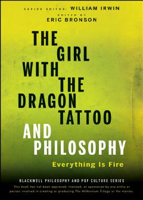

TGStig Larssonning 'Millennium' trilogiyasini falsafiy tahlil qiluvchi qiziqarli tadqiqot.
Ushbu kitob Stig Larssonning mashhur 'Millennium' trilogiyasi asarlarini falsafiy nuqtai nazardan tahlil qiladi. Unda asar qahramonlari va voqealari orqali axloq, adolat hamda inson tabiati kabi chuqur falsafiy masalalar muhokama qilinadi.